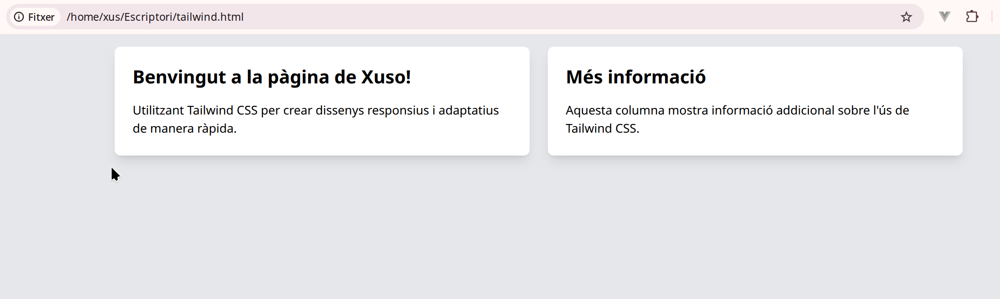

Instal·lació i configuració
Tutorial: Què és Tailwind CSS i com incorporar-lo a un arxiu HTML
Tailwind CSS és un framework CSS utilitari que et permet crear dissenys personalitzats de manera ràpida i eficient mitjançant l'ús de classes utilitàries directes. En lloc de definir estils CSS personalitzats en arxius externs, Tailwind et permet aplicar estils a elements HTML directament mitjançant classes predeterminades.
Aquesta metodologia t'ajuda a mantenir el codi net, flexible i fàcil de gestionar. Amb Tailwind, pots crear dissenys únics sense necessitat de tocar arxius CSS personalitzats per cada petit canvi.
1. Què és Tailwind CSS?
Tailwind CSS és un framework de tipus utilitari, el que vol dir que en comptes de crear components predeterminats (com en altres frameworks CSS com Bootstrap o Foundation), proporciona una gran varietat de classes utilitàries. Aquestes classes s'utilitzen directament a l'HTML per a estils com marges, espais, colors, tipus de lletra, disseny de graelles, etc.
Beneficis principals de Tailwind CSS:
- Disseny modular: Només afegeixes les classes que necessites. No tens un conjunt de components predissenyats que has d'adaptar.
- Molt flexible: Pots personalitzar cada classe segons les teves necessitats.
- Millor rendiment: El sistema de classes de Tailwind és lleuger perquè només utilitzes les utilitats que inclous al teu projecte.
- Responsivitat fàcil: Les classes de Tailwind estan preparades per adaptar-se fàcilment a diferents mides de pantalla.
- Extensibilitat: És fàcil afegir personalitzacions si vols un disseny únic o un conjunt d’estils específics.
2. Com funciona Tailwind CSS?
Tailwind CSS utilitza classes utilitàries per definir estils en línia. Algunes de les classes més comunes són:
p-{size}: Padding (marge interior)m-{size}: Margin (marge exterior)bg-{color}: Background color (color de fons)text-{color}: Color del textflex,grid,block,inline-block: Per a dissenys flexibles i graellesw-{size},h-{size}: Ample i altura dels elementsrounded: Per a cantonades arrodonides
Amb aquestes classes, pots afegir estils directament a l'HTML sense haver de crear arxius CSS personalitzats.
3. Com afegir Tailwind CSS a un arxiu HTML
Ara et mostraré com incorporar Tailwind CSS a un arxiu HTML en diferents maneres: utilitzant un CDN i configurant-lo localment.
Mètode 1: Afegir Tailwind CSS utilitzant un CDN
Una de les maneres més fàcils d'incorporar Tailwind CSS a un arxiu HTML és mitjançant un CDN (Content Delivery Network). Això permet utilitzar Tailwind sense necessitat de cap configuració prèvia, ideal per a prototips o demostracions ràpides.
- Obre el teu arxiu HTML i afegeix el següent codi dins de la secció
<head>del teu document HTML:
Explicació del codi:
<script src="https://cdn.tailwindcss.com"></script>: Aquesta línia carrega Tailwind CSS des del CDN oficial de Tailwind. No cal instal·lar res localment.class="bg-gray-100 p-6": Aplica un fons gris clar i un padding de 6 unitats a tot el cos de la pàgina.class="text-3xl font-bold text-center text-blue-500": Dóna al títol un tamany de text de 3x, fa el text en negreta, el centra i l'assigna un color blau.
Mètode 2: Afegir Tailwind CSS a través de la instal·lació local
Per a projectes més grans o quan vulguis personalitzar Tailwind, és millor instal·lar-lo localment i utilitzar-lo juntament amb eines com PostCSS i Autoprefixer.
- Instal·la Tailwind CSS mitjançant npm:
Si tens Node.js i npm instal·lats, segueix aquests passos per configurar Tailwind CSS localment:
-
Crea un nou directori per al projecte:
-
Inicialitza el teu projecte:
Bash -
Instal·la Tailwind CSS i les dependències necessàries:
-
Configura Tailwind:
El comandament anterior crea un fitxer de configuració tailwind.config.js. Edita aquest fitxer (si cal) i afegeix la configuració:
| JavaScript | |
|---|---|
- Crea el fitxer CSS:
Afegeix Tailwind al teu fitxer CSS (per exemple, src/styles.css o src/index.css):
- Crear un fitxer de construcció (build):
Afegir aquest script al teu package.json per generar els fitxers CSS de producció:
Després, crea els fitxers CSS de producció amb:
| Bash | |
|---|---|
- Incorporar Tailwind al teu HTML:
Finalment, afegeix el CSS generat (dist/output.css) al teu arxiu HTML:
| HTML | |
|---|---|
Exemple d'ús de Tailwind CSS a l'HTML
Aquí tens un exemple de com podries crear una pàgina senzilla amb Tailwind CSS utilitzant un layout de dues columnes:

Explicació del codi:
grid grid-cols-1 md:grid-cols-2: Utilitza el sistema de grid per fer que el layout tingui 1 columna a dispositius petits i 2 columnes a dispositius mitjans o més grans.gap-6: Afegix espai entre les columnes.bg-white p-6 rounded-lg shadow-lg: Aplica un fons blanc, padding de 1.5 rem, cantonades arrodonides i una ombra per a cada columna.text-2xl font-bold mb-4: Dóna estil al títol amb una mida de text de 2x i font en negreta, amb un marge inferior de 1 rem.